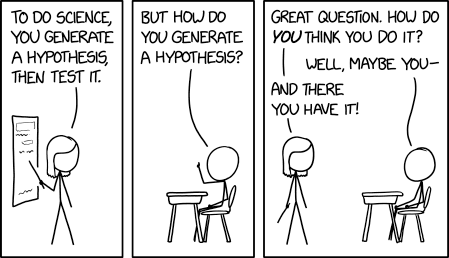
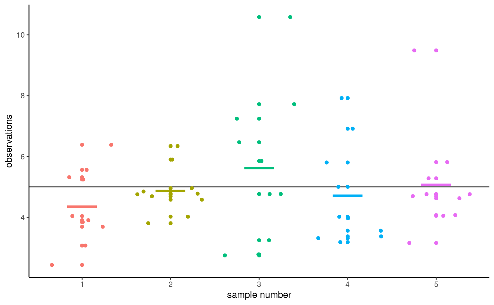
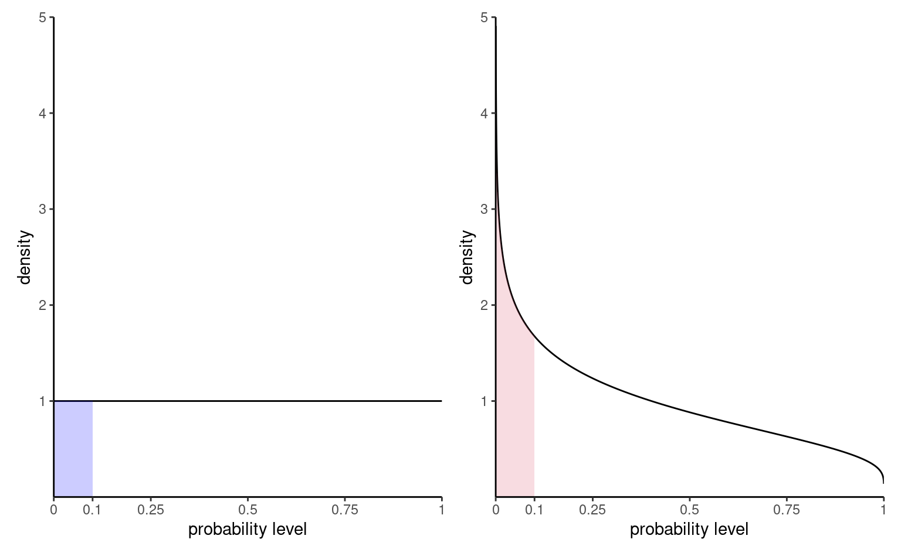
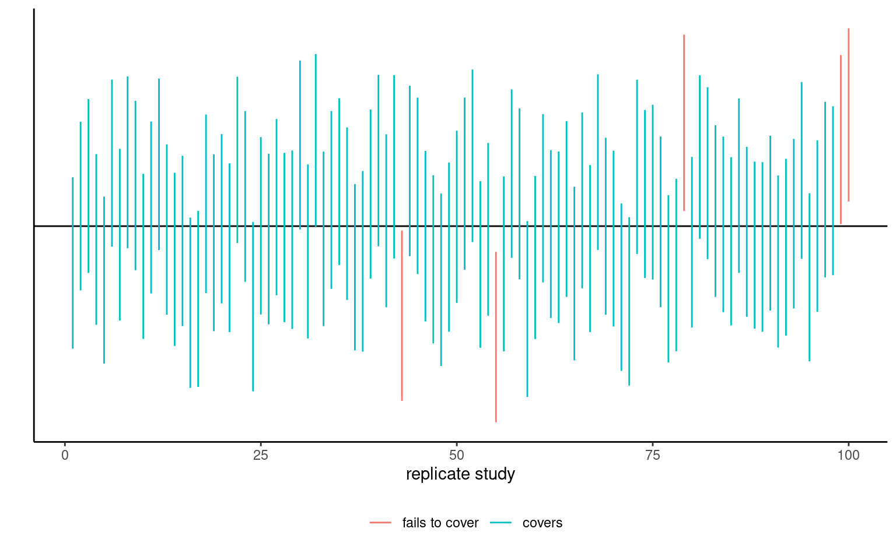
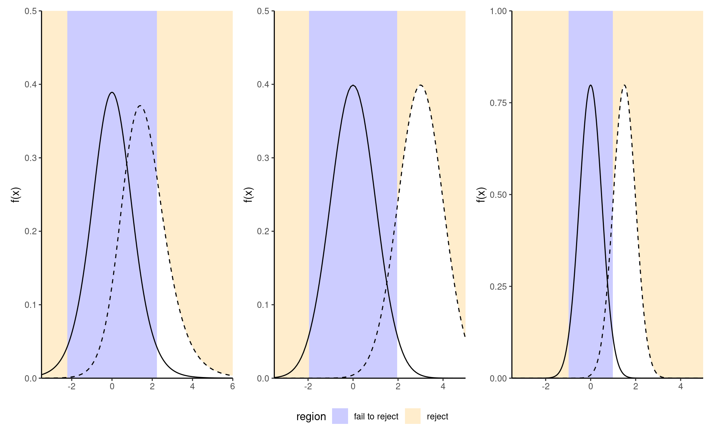
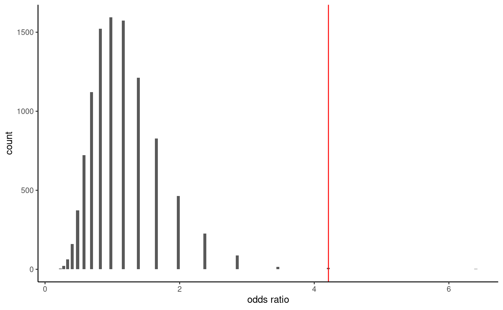
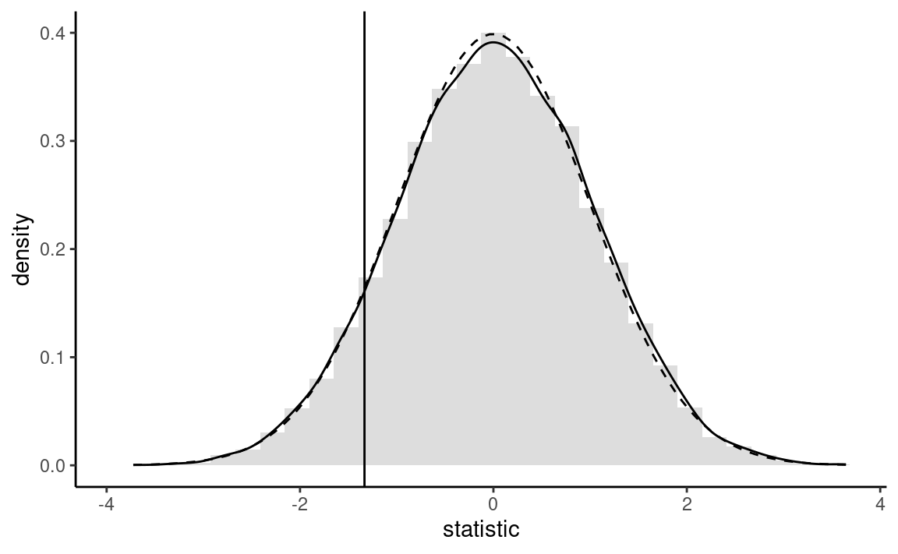

2 Statistical inference
In most applied domains, empirical evidences drive the advancement of the field and data from well designed experiments contribute to the built up of science. In order to draw conclusions in favour or against a theory, researchers turn (often unwillingly) to statistics to back up their claims. This has led to the prevalence of the use of the null hypothesis statistical testing (NHST) framework. One important aspect of the reproducibility crisis is the misuse of \(p\)-values in journal articles: falsification of a null hypothesis is not enough to provide substantive findings for a theory.
Because introductory statistics course typically present hypothesis tests without giving much thoughts to the underlying construction principles of such procedures, users often have a reductive view of statistics as a catalogue of pre-determined procedures. To make a culinary analogy, users focus on learning recipes rather than trying to understand the basics of cookery. This chapter focuses on understanding of key ideas related to testing.
Important
Learning objectives:
- Understanding the role of uncertainty in decision making.
- Understanding the importance of signal-to-noise ratio as a measure of evidence.
- Knowing the basic ingredients of hypothesis testing and being capable of correctly formulating and identifying these components in a paper.
- Correctly interpreting \(p\)-values and confidence intervals for a parameter.
The first step of a design is formulating a research question. Generally, this hypothesis will specify potential differences between population characteristics due to some intervention (a treatment) that the researcher wants to quantify. This is the step during which researchers decide on sample size, choice of response variable and metric for the measurement, write down the study plan, etc.
It is important to note that most research questions cannot be answered by simple tools. Researchers wishing to perform innovative methodological research should contact experts and consult with statisticians before they collect their data to get information on how best to proceed for what they have in mind so as to avoid the risk of making misleading and false claims based on incorrect analysis or data collection.
2.1 Sampling variability
Given data, a researcher will be interested in estimating particular characteristics of the population. We can characterize the set of all potential values their measurements can take, together with their frequency, via a distribution.
The purpose of this section is to illustrate how we cannot simply use raw differences between groups to make meaningful comparisons: due to sampling variability, samples will be alike even if they are generated in the same way, but there will be always be differences between their summary statistics. Such differences tend to attenuate (or increase) as we collect more sample. Inherent to this is the fact that as we gather more data (and thus more information) about our target, the portrait becomes more precise. This is ultimately what allows us to draw meaningful conclusions but, in order to do so, we need first to determine what is likely or plausible and could be a stroke of luck, and what is not likely to occur solely due to randomness.
We call numerical summaries of the data statistics. Its important to distinguish between procedures/formulas and their numerical values. An estimator is a rule or formula used to calculate an estimate of some parameter or quantity of interest based on observed data (like a recipe for cake). Once we have observed data we can actually compute the sample mean, that is, we have an estimate — an actual value (the cake), which is a single realization and not random. In other words,
- an estimand is our conceptual target, like the population characteristic of interest (population mean).
- an estimator is the procedure or formula telling us how to transform the sample data into a numerical summary that is a proxy of our target.
- an estimate is a number, the numerical value obtained once we apply the formula to observed data.


For example, we may use as estimand the population average of \(Y_1, \ldots,\) say \(\mu.\) The estimator will be sample mean, i.e., the sum of the elements in the sample divided by the sample size, \(\overline{Y}=(Y_1 + \cdots + Y_n)/n.\) The estimate will be a numerical value, say 4.3.
Because the inputs of the estimator are random, the output is also random and change from one sample to the next: even if you repeat a recipe, you won’t get the exact same result every time, as in Figure 2.3.

To illustrate this point, Figure 2.4 shows five simple random samples of size \(n=10\) drawn from an hypothetical population with mean \(\mu\) and standard deviation \(\sigma,\) along with their sample mean \(\overline{y}.\) Because of the sampling variability, the sample means of the subgroups will differ even if they originate from the same distribution. You can view sampling variability as noise: our goal is to extract the signal (typically differences in means) but accounting for spurious results due to the background noise.

The astute eye might even notice that the sample means (thick horizontal segments) are less dispersed around the full black horizontal line representing the population average \(\mu\) than are the individual measurements. This is a fundamental principle of statistics: information accumulates as you get more data.
Values of the sample mean don’t tell the whole picture and studying differences in mean (between groups, or relative to a postulated reference value) is not enough to draw conclusions. In most settings, there is no guarantee that the sample mean will be equal to it’s true value because it changes from one sample to the next: the only guarantee we have is that it will be on average equal to the population average in repeated samples. Depending on the choice of measurement and variability in the population, there may be considerable differences from one observation to the next and this means the observed difference could be a fluke.
To get an idea of how certain something is, we have to consider the variability of an observation \(Y_i.\) This variance of an observation drawn from the population is typically denoted \(\sigma^2\) and it’s square root, the standard deviation, by \(\sigma.\)
The standard deviation of a statistic is termed standard error; it should not be confused with the standard deviation \(\sigma\) of the population from which the sample observations \(Y_1, \ldots, Y_n\) are drawn. Both standard deviation and standard error are expressed in the same units as the measurements, so are easier to interpret than variance. Since the standard error is a function of the sample size, it is however good practice to report the estimated standard deviation in reports.
Example 2.1 (Sample proportion and uniform draws) To illustrate the concept of sampling variability, we follow the lead of Matthew Crump and consider samples from a uniform distribution on \(\{1, 2, \ldots, 10\}\) each number in this interval is equally likely to be sampled.

Even if they are drawn from the same population, the 10 samples in Figure 2.5 look quite different. The only thing at play here is the sample variability: since there are \(n=20\) observations in total, there should be on average 10% of the observations in each of the 10 bins, but some bins are empty and others have more counts than expected. This fluctuation is due to randomness, or chance.
How can we thus detect whether what we see is compatible with the model we think generated the data? The key is to collect more observations: the bar height is the sample proportion, an average of 0/1 values with ones indicating that the observation is in the bin and zero otherwise.
Consider now what happens as we increase the sample size: the top panel of Figure 2.6 shows uniform samples for increasing samples size. The scaled bar plot looks more and more like the true underlying distribution (flat, each bin with equal frequency) as the sample size increases. The sample distribution of points is nearly indistinguishable from the theoretical one (straight line) when \(n=10 000.\)1 The bottom panel, on the other hand, isn’t from a uniform distribution and larger samples come closer to the population distribution. We couldn’t have spotted this difference in the first two plots, since the sampling variability is too important; there, the lack of data in some bins could have been attributed to chance, as they are comparable with the graph for data that are truly uniform. This is in line with most practical applications, in which the limited sample size restricts our capacity to disentangle real differences from sampling variability. We must embrace this uncertainty: in the next section, we outline how hypothesis testing helps us disentangle the signal from the noise.

2.2 Hypothesis testing
An hypothesis test is a binary decision rule used to evaluate the statistical evidence provided by a sample to make a decision regarding the underlying population. The main steps involved are:
- define the model parameters
- formulate the alternative and null hypothesis
- choose and calculate the test statistic
- obtain the null distribution describing the behaviour of the test statistic under \(\mathscr{H}_0\)
- calculate the p-value
- conclude (reject or fail to reject \(\mathscr{H}_0\)) in the context of the problem.
A good analogy for hypothesis tests is a trial for murder on which you are appointed juror.
- The judge lets you choose between two mutually exclusive outcome, guilty or not guilty, based on the evidence presented in court.
- The presumption of innocence applies and evidences are judged under this optic: are evidence remotely plausible if the person was innocent? The burden of the proof lies with the prosecution to avoid as much as possible judicial errors. The null hypothesis \(\mathscr{H}_0\) is not guilty, whereas the alternative \(\mathscr{H}_a\) is guilty. If there is a reasonable doubt, the verdict of the trial will be not guilty.
- The test statistic (and the choice of test) represents the summary of the proof. The more overwhelming the evidence, the higher the chance the accused will be declared guilty. The prosecutor chooses the proof so as to best outline this: the choice of evidence (statistic) ultimately will maximise the evidence, which parallels the power of the test.
- The final step is the verdict. This is a binary decision, guilty or not guilty. For an hypothesis test performed at level \(\alpha,\) one would reject (guilty) if the p-value is less than \(\alpha.\)
The above description provides some heuristic, but lacks crucial details.
2.3 Hypothesis
In statistical tests we have two hypotheses: the null hypothesis (\(\mathscr{H}_0\)) and the alternative hypothesis (\(\mathscr{H}_1\)). Usually, the null hypothesis is the ‘status quo’ and the alternative is what we’re really interested in testing. A statistical hypothesis test allows us to decide whether or not our data provides enough evidence to reject \(\mathscr{H}_0\) in favour of \(\mathscr{H}_1,\) subject to some pre-specified risk of error. Usually, hypothesis tests involve a parameter, say \(\theta,\) which characterizes the underlying distribution at the population level ans whose value is unknown. A two-sided hypothesis test regarding a parameter \(\theta\) has the form \[\begin{align*} \mathscr{H}_0: \theta=\theta_0 \qquad \text{versus} \qquad \mathscr{H}_a:\theta \neq \theta_0. \end{align*}\] We are testing whether or not \(\theta\) is precisely equal to the value \(\theta_0.\) The hypotheses are a statistical representation of our research question.
A common example of two-sided test is one for the regression coefficient \(\beta_j\) associated to an explanatory variable \(\mathrm{X}_j,\) for which the null and alternative hypothesis are \[\begin{align*} \mathscr{H}_0: \beta_j=\beta_j^0 \qquad \text{versus} \qquad \mathscr{H}_a:\beta_j \neq \beta_j^0, \end{align*}\] where \(\beta_j^0\) is some value that reflects the research question of interest. For example, if \(\beta_j^0=0,\) the underlying question is: is covariate \(\mathrm{X}_j\) impacting the response \(Y\) linearly once other variables have been taken into account?
Note that we can impose direction in the hypotheses and consider alternatives of the form \(\mathscr{H}_a: \theta > \theta_0\) or \(\mathscr{H}_a: \theta < \theta_0.\)
2.4 Test statistic
A test statistic \(T\) is a function of the data that summarise the information contained in the sample for \(\theta.\) The form of the test statistic is chosen such that we know its underlying distribution under \(\mathscr{H}_0,\) that is, the potential values taken by \(T\) and their relative probability if \(\mathscr{H}_0\) is true. Indeed, \(Y\) is a random variable and its value change from one sample to the next. This allows us to determine what values of \(T\) are likely if \(\mathscr{H}_0\) is true. Many statistics we will consider are Wald statistic, of the form \[\begin{align*} T = \frac{\widehat{\theta} - \theta_0}{\mathrm{se}(\widehat{\theta})} \end{align*}\] where \(\widehat{\theta}\) is an estimator of \(\theta,\) \(\theta_0\) is the postulated value of the parameter and \(\mathrm{se}(\widehat{\theta})\) is an estimator of the standard deviation of the test statistic \(\widehat{\theta}.\)
For example, to test whether the mean of a population is zero, we set \[\begin{align*} \mathscr{H}_0: \mu=0, \qquad \mathscr{H}_a:\mu \neq 0, \end{align*}\] and the Wald statistic is \[\begin{align*} T &= \frac{\overline{X}-0}{S_n/\sqrt{n}} \end{align*}\] where \(\overline{X}\) is the sample mean of \(X_1, \ldots, X_n,\) \[\begin{align*} \overline{X} &= \frac{1}{n} \sum_{i=1}^n X_i = \frac{X_1+ \cdots + X_n}{n} \end{align*}\] and the standard error (of the mean) \(\overline{X}\) is \(S_n/\sqrt{n}\); the sample variance \(S_n\) is an estimator of the standard deviation \(\sigma,\) \[\begin{align*} S^2_n &= \frac{1}{n-1} \sum_{i=1}^n (X_i-\overline{X})^2. \end{align*}\]
2.5 Null distribution and p-value
The p-value allows us to decide whether the observed value of the test statistic \(T\) is plausible under \(\mathscr{H}_0.\) Specifically, the p-value is the probability that the test statistic is equal or more extreme to the estimate computed from the data, assuming \(\mathscr{H}_0\) is true. Suppose that based on a random sample \(Y_1, \ldots, Y_n\) we obtain a statistic whose value \(T=t.\) For a two-sided test \(\mathscr{H}_0:\theta=\theta_0\) vs. \(\mathscr{H}_a:\theta \neq \theta_0,\) the p-value is \(\Pr_0(|T| \geq |t|).\)2
How do we determine the null distribution given that the true data generating mechanism is unknown to us? We ask a statistician! In simple cases, it might be possible to enumerate all possible outcomes and thus quantity the degree of outlyingness of our observed statistic. In more general settings, we can resort to simulations or to probability theory: the central limit theorem says that the sample mean behaves like a normal random variable with mean \(\mu\) and standard deviation \(\sigma/\sqrt{n}\) for \(n\) large enough. The central limit theorem has broader applications since most statistics can be viewed as some form of average or transformation thereof, a fact used to derive benchmarks for most commonly used tests. Most software use these approximations as proxy by default: the normal, Student’s \(t,\) \(\chi^2\) and \(F\) distributions are the reference distributions that arise the most often.
Figure 2.7 shows the distribution of \(p\)-values for two scenarios: one in which there are no differences and the null is true, the other under an alternative. The probability of rejection is obtained by calculating the area under the density curve between zero and \(\alpha=0.1,\) here 0.1 on the left. Under the null, the model is calibrated and the distribution of p-values is uniform (i.e., a flat rectangle of height 1), meaning all values in the unit interval are equally likely. Under the alternative (right), small p-values are more likely to be observed.

There are generally three ways of obtaining null distributions for assessing the degree of evidence against the null hypothesis
- exact calculations
- large sample theory (aka ‘asymptotics’ in statistical lingo)
- simulation
While desirable, the first method is only applicable in simple cases (such as counting the probability of getting two six if you throw two fair die). The second method is most commonly used due to its generality and ease of use (particularly in older times where computing power was scarce), but fares poorly with small sample sizes (where ‘too small’ is context and test-dependent). The last approach can be used to approximate the null distribution in many scenarios, but adds a layer of randomness and the extra computations costs sometimes are not worth it.
Consider the example of a two-sided test involving the population mean \(\mathscr{H}_0:\mu=0\) against the alternative \(\mathscr{H}_1:\mu \neq 0.\) Assuming the random sample comes from a normal (population) \(\mathsf{normal}(\mu, \sigma^2),\) it can be shown that if \(\mathscr{H}_0\) is true (that is, if \(\mu=0\)), the test statistic \[\begin{align*} T = \frac{\overline{X}}{S/\sqrt{n}} \end{align*}\] follows a Student-t distribution with \(n-1\) degrees of freedom. This allows us to calculate the p-value (either from a table, or using some statistical software). By virtue of the symmetry, the p-value is \(P = 2\times\Pr(T > |t|),\) where \(T \sim \mathsf{Student}(n-1).\)
2.6 Confidence intervals
A confidence interval is an alternative way to present the conclusions of an hypothesis test performed at significance level \(\alpha.\) It is often combined with a point estimator \(\hat{\theta}\) plus or minus a margin of error designed to give an indication of the variability of the estimation procedure. Wald-based \((1-\alpha)\) confidence intervals for a scalar parameter \(\theta\) are of the form \[\begin{align*} [\widehat{\theta} + \mathfrak{q}_{\alpha/2}\mathrm{se}(\widehat{\theta}), \widehat{\theta} +\mathfrak{q}_{1-\alpha/2}\times \mathrm{se}(\widehat{\theta})] \end{align*}\] where \(\mathfrak{q}_{\alpha/2}\) is the \(\alpha/2\) quantile of the null distribution of the Wald statistic \(W,\) \[\begin{align*} W =\frac{\widehat{\theta}-\theta}{\mathrm{se}(\widehat{\theta})}, \end{align*}\] and where \(\theta\) represents the postulated value for the fixed, but unknown value of the parameter. The critical values for a symmetric interval, chosen so that the probability of being more extreme is \(\alpha\), are the \(\alpha/2\) and \(1-\alpha/2\) quantiles of the null distribution.
For example, for a random sample \(X_1, \ldots, X_n\) from a normal distribution \(\mathsf{normal}(\mu, \sigma),\) the (\(1-\alpha\)) confidence interval for the population mean \(\mu\) is \[\begin{align*} \overline{X} \pm t_{n-1, \alpha/2} \frac{S}{\sqrt{n}} \end{align*}\] where \(t_{n-1,\alpha/2}\) is the \(1-\alpha/2\) quantile of a Student-\(t\) distribution with \(n-1\) degrees of freedom.
The bounds of the confidence intervals are random variables, since both estimators of the parameter and its standard error, \(\widehat{\theta}\) and \(\mathrm{se}(\widehat{\theta}),\) are random: their values will vary from one sample to the next. Before the interval is calculated, there is a \(1-\alpha\) probability that \(\theta\) is contained in the random interval \((\widehat{\theta} - \mathfrak{q}_{\alpha/2} \; \mathrm{se}(\widehat{\theta}), \widehat{\theta} + \mathfrak{q}_{\alpha/2} \; \mathrm{se}(\widehat{\theta})),\) where \(\widehat{\theta}\) denotes the estimator. Once we obtain a sample and calculate the confidence interval, there is no more notion of probability: the true value of the parameter \(\theta\) is either in the confidence interval or not. We can interpret confidence intervals as follows: if we were to repeat the experiment multiple times, and calculate a \(1-\alpha\) confidence interval each time, then roughly \(1-\alpha\) of the calculated confidence intervals would contain the true value of \(\theta\) in repeated samples (in the same way, if you flip a coin, there is roughly a 50-50 chance of getting heads or tails, but any outcome will be either). Our confidence is in the procedure we use to calculate confidence intervals and not in the actual values we obtain from a sample.

If we are only interested in the binary decision rule reject/fail to reject \(\mathscr{H}_0,\) the confidence interval is equivalent to a p-value since it leads to the same conclusion. Whereas the \(1-\alpha\) confidence interval gives the set of all values for which the test statistic doesn’t provide enough evidence to reject \(\mathscr{H}_0\) at level \(\alpha,\) the p-value gives the probability under the null of obtaning a result more extreme than the postulated value and so is more precise for this particular value. If the p-value is smaller than \(\alpha,\) our null value \(\theta\) will be outside of the confidence interval and vice-versa.
2.7 Conclusion
The p-value allows us to make a decision about the null hypothesis. If \(\mathscr{H}_0\) is true, the p-value follows a uniform distribution. Thus, if the p-value is small, this means observing an outcome more extreme than \(T=t\) is unlikely, and so we’re inclined to think that \(\mathscr{H}_0\) is not true. There’s always some underlying risk that we’re making a mistake when we make a decision. In statistic, there are two type of errors:
- type I error: we reject \(\mathscr{H}_0\) when \(\mathscr{H}_0\) is true,
- type II error: we fail to reject \(\mathscr{H}_0\) when \(\mathscr{H}_0\) is false.
These hypothesis are not judged equally: we seek to avoid error of type I (judicial errors, corresponding to condemning an innocent). To prevent this, we fix the level of the test, \(\alpha,\) which captures our tolerance to the risk of committing a type I error: the higher the level of the test \(\alpha,\) the more often we will reject the null hypothesis when the latter is true. The value of \(\alpha \in (0, 1)\) is the probability of rejecting \(\mathscr{H}_0\) when \(\mathscr{H}_0\) is in fact true, \[\begin{align*} \alpha = \Pr{}_0\left(\text{ reject } \mathscr{H}_0\right). \end{align*}\] where the subscript \(\Pr{}_0\) indicates the probability under the null model. The level \(\alpha\) is fixed beforehand, typically \(1\)%, \(5\)% or \(10\)%. Keep in mind that the probability of type I error is \(\alpha\) only if the null model for \(\mathscr{H}_0\) is correct (sic) and correspond to the data generating mechanism.
The focus on type I error is best understood by thinking about medical trial: you need to prove a new cure is better than existing alternatives drugs or placebo, to avoid extra costs or harming patients (think of Didier Raoult and his unsubstantiated claims that hydrochloroquine, an antipaludean drug, should be recommended treatment against Covid19).
| Decision \ true model | \(\mathscr{H}_0\) | \(\mathscr{H}_a\) |
|---|---|---|
| fail to reject \(\mathscr{H}_0\) | \(\checkmark\) | type II error |
| reject \(\mathscr{H}_0\) | type I error | \(\checkmark\) |
To make a decision, we compare our p-value \(P\) with the level of the test \(\alpha\):
- if \(P < \alpha,\) we reject \(\mathscr{H}_0\);
- if \(P \geq \alpha,\) we fail to reject \(\mathscr{H}_0.\)
Do not mix up level of the test (probability fixed beforehand by the researcher) and the p-value. If you do a test at level 5%, the probability of type I error is by definition \(\alpha\) and does not depend on the p-value. The latter is conditional probability of observing a more extreme likelihood given the null distribution \(\mathscr{H}_0\) is true.
Caution
The American Statistical Association (ASA) published a list of principles guiding (mis)interpretation of p-values, some of which are reproduced below:
- P-values do not measure the probability that the studied hypothesis is true.
- Scientific conclusions and business or policy decisions should not be based only on whether a p-value passes a specific threshold.
- P-values and related analyses should not be reported selectively.
- p-value, or statistical significance, does not measure the size of an effect or the importance of a result.
2.8 Power
There are two sides to an hypothesis test: either we want to show it is not unreasonable to assume the null hypothesis, or else we want to show beyond reasonable doubt that a difference or effect is significative: for example, one could wish to demonstrate that a new website design (alternative hypothesis) leads to a significant increase in sales relative to the status quo. Our ability to detect these improvements and make discoveries depends on the power of the test: the larger the power, the greater our ability to reject \(\mathscr{H}_0\) when the latter is false.
Failing to reject \(\mathscr{H}_0\) when \(\mathscr{H}_a\) is true corresponds to the definition of type II error, the probability of which is \(1-\text{power},\) say. The power of a test is the probability of rejecting \(\mathscr{H}_0\) when \(\mathscr{H}_0\) is false, i.e., \[\begin{align*} \Pr{\!}_a(\text{reject } \mathscr{H}_0), \end{align*}\] i.e., the probability under the alternative model of falling in the rejection region. Depending on the alternative models, it is more or less easy to detect that the null hypothesis is false and reject in favor of an alternative.

We want a test to have high power, i.e., that the power should be as close to 1 as possible. Minimally, the power of the test should be \(\alpha\) because we reject the null hypothesis \(\alpha\) fraction of the time even when \(\mathscr{H}_0\) is true. Power depends on many criteria, notably
- the effect size: the bigger the difference between the postulated value for \(\theta_0\) under \(\mathscr{H}_0\) and the observed behavior, the easier it is to detect it, as in the middle panel of Figure 2.8;
- variability: the less noisy your data, the easier it is to detect differences between the curves (big differences are easier to spot, as the right panel of Figure 2.8 shows);
- the sample size: the more observation, the higher our ability to detect significative differences because the standard error decreases with sample size \(n\) at a rate (typically) of \(n^{-1/2}.\) The null distribution also becomes more concentrated as the sample size increase.
- the choice of test statistic: for example, rank-based statistics discard information about the actual values and care only about relative ranking. Resulting tests are less powerful, but are typically more robust to model misspecification and outliers. The statistics we will choose are standard and amongst the most powerful: as such, we won’t dwell on this factor.
To calculate the power of a test, we need to single out a specific alternative hypothesis. In very special case, analytic derivations are possible but typically we compute the power of a test through Monte Carlo methods. For a given alternative, we simulate repeatedly samples from the model, compute the test statistic on these new samples and the associated p-values based on the postulated null hypothesis. We can then calculate the proportion of tests that lead to a rejection of the null hypothesis at level \(\alpha,\) namely the percentage of p-values smaller than \(\alpha.\)
2.9 Examples
Example 2.2 (Gender inequality and permutation tests) We consider data from Rosen and Jerdee (1974), who look at sex role stereotypes and their impacts on promotion and opportunities for women candidates. The experiment took place in 1972 and the experimental units, which consisted of 95 male bank supervisors, were submitted to various memorandums and asked to provide ratings or decisions based on the information provided.
We are interested in Experiment 1 related to promotion of employees: managers were requested to decide on whether or not to promote an employee to become branch manager based on recommendations and ratings on potential for customer and employee relations.
The authors intervention focused on the description of the nature (complexity) of the manager’s job (either simple or complex) and the sex of the candidate (male or female): all files were otherwise similar.
We consider for simplicity only sex as a factor and aggregate over job for the \(n=93\) replies. Table 2.1 shows the counts for each possibility.
| male | female | |
|---|---|---|
| promote | 32 | 19 |
| hold file | 12 | 30 |
The null hypothesis of interest here that sex has no impact, so the probability of promotion is the same for men and women. Let \(p_{\text{m}}\) and \(p_{\text{w}}\) denote these respective probabilities; we can thus write mathematically the null hypothesis as \(\mathscr{H}_0: p_{\text{m}} = p_{\text{w}}\) against the alternative \(\mathscr{H}_a: p_{\text{m}} \neq p_{\text{w}}.\)
The test statistic typically employed for contingency tables is a chi-square test3, which compares the overall proportions of promoted to that in for each subgroup. The sample proportion for male is 32/42 = ~76%, compared to 19/49 or ~49% for female. While it seems that this difference of 16% is large, it could be spurious: the standard error for the sample proportions is roughly 3.2% for male and 3.4% for female.
If there was no discrimination based on sex, we would expect the proportion of people promoted to be the same overall; this is 51/93 =0.55 for the pooled sample. We could simply do a test for the mean difference, but rely instead on the Pearson contingency \(X^2_p\) (aka chi-square) test, which compares the expected counts (based on equal promotion rates) to the observed counts, suitably standardized. If the discrepancy is large between expected and observed, than this casts doubt on the validity of the null hypothesis.
If the counts of each cell are large, the null distribution of the chi-square test is well approximated by a \(\chi^2\) distribution. The output of the test includes the value of the statistic, \(10.79,\) the degrees of freedom of the \(\chi^2\) approximation and the p-value, which gives the probability that a random draw from a \(\chi^2_1\) distribution is larger than the observed test statistic assuming the null hypothesis is true. The p-value is very small, \(0.001,\) which means such a result is quite unlikely to happen by chance if there was no sex-discrimination.
Another alternative to obtain a benchmark to assess the outlyingness of the observed odds ratio is to use simulations: permutation tests are well illustrated by Jared Wilber. Consider a database containing the raw data with 93 rows, one for each manager, with for each an indicator of action and the sex of the hypothetical employee presented in the task.
| action | sex |
|---|---|
| promote | male |
| hold file | female |
| promote | male |
| hold file | female |
| hold file | male |
Under the null hypothesis, sex has no incidence on the action of the manager. This means we could get an idea of the “what-if” world by shuffling the sex labels repeatedly. Thus, we could obtain a benchmark by repeating the following steps multiple times:
- permute the labels for
sex, - recreate a contingency table by aggregating counts,
- calculate a test statistic for the simulated table.
As test statistic, we use odds ratio: the odds of an event is the ratio of the number of success over failure: in our example, this would be the number of promoted over held files. The odds of promotion for male is \(32/12,\) whereas that of female is \(19/30.\) The odds ratio for male versus female is thus \(\mathsf{OR}=(32/12) / (19/30)= 4.21.\) Under the null hypothesis, \(\mathscr{H}_0: \mathsf{OR}= 1\) (same probability of being promoted) (why?)

The histogram in Figure 2.9 shows the distribution of the odds ratio based on 10 000 permutations. Reassuringly, we again get roughly the same approximate p-value, here 0.002.4
The article concluded (in light of the above and further experiments)
Results confirmed the hypothesis that male administrators tend to discriminate against female employees in personnel decisions involving promotion, development, and supervision.
Recap
- Model parameters: probability of promotion for men and women, respectively \(p_{\text{m}}\) and \(p_{\text{w}}.\)
- Hypotheses: no discrimination based on gender, meaning equal probability of promotion (null hypothesis \(\mathscr{H}_0: p_{\text{m}}=p_{\text{w}},\) versus alternative hypothesis \(\mathscr{H}_a: p_{\text{m}}\neq p_{\text{w}}\)).
- Test statistic: (1) chi-square test for contingency tables and (2) odds ratio.
- \(p\)-value: (1) \(.0010\) and (2) \(.0024\) based on permutation test.
- Conclusion: reject null hypothesis, as there is evidence of a gender-discrimination with different probability of promotion for men and women.
Following the APA guidelines, the \(\chi^2\) statistic would be reported as \(\chi^2(1, n = 93) = 10.79\), \(p = .001\) along with counts and sample proportions.
Example 2.3 (“The Surprise of Reaching Out”) Liu et al. (2023) studies social interactions and the impact of surprise on people reaching out if this contact is unexpected. Experiment 1 focuses on questionnaires where the experimental condition is the perceived appreciation of reaching out to someone (vs being reached to). The study used a questionnaire administered to 200 American adults recruited on the Prolific Academic platform. The response index consists of the average of four questions measured on a Likert scale ranging from 1 to 7, with higher values indicating higher appreciation.
We can begin by inspecting summary statistics for the sociodemographic variables (gender and age) to assess whether the sample is representative of the general population as a whole. The proportion of other (including non-binary people) is much higher than that of the general census, and the population skews quite young according to Table 2.3.
| gender | min | max | mean | n |
|---|---|---|---|---|
| male | 18 | 78 | 32.0 | 105 |
| female | 19 | 68 | 36.5 | 92 |
| other | 24 | 30 | 27.7 | 3 |
| role | mean | sd | n |
|---|---|---|---|
| initiator | 5.50 | 1.28 | 103 |
| responder | 5.87 | 1.27 | 97 |
Since there are only two groups, initiator and responder, we are dealing with a pairwise comparison. The logical test one could use is a two sample t-test, or a variant thereof. Using Welch two sample \(t\)-test statistic, both group average and standard deviation are estimated using the data provided.
The software returns \(t(197.52) = -2.05\), \(p = .041\), which leads to the rejection of the null hypothesis of no difference in appreciation depending on the role of the individual (initiator or responder). The estimated mean difference is \(\Delta M = -0.37\), 95% CI \([-0.73, -0.01]\); since \(0\) is not included in the confidence interval, we also reject the null hypothesis at level 5%. The estimate suggests that initiators underestimate the appreciation of reaching out.5
Recap
- Model parameters: average expected appreciation score \(\mu_{\mathrm{i}}\) and \(\mu_{\mathrm{r}}\) of initiators and responder, respectively
- Hypothesis: expected appreciation score is the same for initiator and responders, \(\mathscr{H}_0: \mu_{\mathrm{i}}=\mu_{\mathrm{r}}\) against alternative \(\mathscr{H}_a: \mu_{\mathrm{i}} \neq \mu_{\mathrm{r}}\) that they are different.
- Test statistic: Welch two sample \(t\)-test
- \(p\)-value: 0.041
- Conclusion: reject the null hypothesis, average appreciation score differs depending on the role
Example 2.4 (Virtual communication curbs creative idea generation) A Nature study performed an experiment to see how virtual communications teamwork by comparing the output both in terms of ideas generated during a brainstorming session by pairs and of the quality of ideas, as measured by external referees. The sample consisted of 301 pairs of participants who interacted via either videoconference or face-to-face.
The authors compared the number of creative ideas, a subset of the ideas generated with creativity score above average. The mean number of the number of creative ideas for face-to-face \(7.92\) ideas (sd \(3.40\)) relative to videoconferencing \(6.73\) ideas (sd \(3.27\)).
Brucks and Levav (2022) used a negative binomial regression model: in their model, the expected number creative ideas generated is \[\begin{align*} \mathsf{E}(\texttt{ncreative}) = \exp(\beta_0 + \beta_1 \texttt{video}) \end{align*}\] where \(\texttt{video}=0\) if the pair are in the same room and \(\texttt{video}=1\) if they interact instead via videoconferencing.
The mean number of ideas for videoconferencing is thus \(\exp(\beta_1)\) times that of the face-to-face: the estimate of the multiplicative factor is \(\exp(\beta_1)\) is \(0.85\) 95% CI \([0.77, 0.94]\).
No difference between experimental conditions translates into the null hypothesis as \(\mathscr{H}_0: \beta_1=0\) vs \(\mathscr{H}_0: \beta_1 \neq 0\) or equivalently \(\mathscr{H}_0: \exp(\beta_1)=1.\) The likelihood ratio test comparing the regression model with and without \(\texttt{video}\) the statistic is \(R=9.89\) (\(p\)-value based on \(\chi^2_1\) of \(.002\)). We conclude the average number of ideas is different, with summary statistics suggesting that virtual pairs generate fewer ideas.
If we had resorted to a two sample \(t\)-test, we would have found a mean difference in the number of creative idea of \(\Delta M = 1.19\), 95% CI \([0.43, 1.95]\), \(t(299) = 3.09\), \(p = .002\).
Both tests come with slightly different sets of assumptions, but yield similar conclusions: there is evidence of a smaller number of creative ideas when people interact via videoconferencing.
Example 2.5 (Price of Spanish high speed train tickets) The Spanish national railway company, Renfe, manages regional and high speed train tickets all over Spain and The Gurus harvested the price of tickets sold by Renfe. We are interested in trips between Madrid and Barcelona and, for now, ask the question: are tickets more expensive one way or another? To answer this, we consider a sample of 8059 AVE tickets sold at Promo rate. Our test statistic will again be the mean difference between the price (in euros) for a train ticket for Madrid–Barcelona (\(\mu_1\)) and the price for Barcelona–Madrid (\(\mu_2\)), i.e., \(\mu_1-\mu_2.\) The null hypothesis is that there are no difference in price, so \(\mathscr{H}_0: \mu_1-\mu_2=0.\)
We use Welch’s \(t\) test statistic for two samples: the sample mean of the price of Barcelona-Madrid tickets is 82.15 euros, that of Madrid-Barcelona tickets is 82.54 euros and the Welch statistic is worth -1.15. If we use a normal approximation, the p-value is 0.25.
Rather than use the asymptotic distribution, whose validity stems from the central limit theorem, we could consider another approximation under the less restrictive assumption that the data are exchangeable: under the null hypothesis, there is no difference between the two destinations and so the label for destination (a binary indicator) is arbitrary. The reasoning underlying permutation tests is as follows: to create a benchmark, we will consider observations with the same number in each group, but permuting the labels. We then compute the test statistic on each of these datasets. If there are only a handful in each group (fewer than 10), we could list all possible permutations of the data, but otherwise we can repeat this procedure many times, say 9999, to get a good approximation. This gives an approximate distribution from which we can extract the p-value by computing the rank of our statistic relative to the others.

The so-called bootstrap approximation to the p-value of the permutation test, \(0.186,\) is the proportion of statistics that are more extreme than the one based on the original sample. It is nearly identical to that obtained from the Satterthwaite approximation, \(0.249\) (the Student-\(t\) distribution is numerically equivalent to a standard normal with that many degrees of freedom), as shown in Figure 2.10. Even if our sample is very large (\(n=8059\) observations), the difference is not statistically significative. With a bigger sample (the database has more than 2 million tickets), we could estimate more precisely the average difference, up to 1/100 of an euro: the price difference would eventually become statistically significative, but this says nothing about practical difference: \(0.28\) euros relative to an Promo ticket priced on average \(82.56\) euros is a negligible amount.
The formula shows that the standard error decreases by a tenfold every time the sample size increases by a factor 100.↩︎
If the distribution of \(T\) is symmetric around zero, the p-value reduces to \(p = 2 \times \Pr_0(T \geq |t|).\)↩︎
If you have taken advanced modelling courses, this is a score test obtained by fitting a Poisson regression with
sexandactionas covariates; the null hypothesis corresponding to lack of interaction term between the two.↩︎The p-value obtained for the permutation test would change from one run to the next since it’s input is random. However, the precision of the proportion statistic is sufficient for decision making purposes.↩︎
Assuming that the variance of each subgroup were equal, we could have used a two-sample \(t\)-test instead. The difference in the conclusion is immaterial, with a nearly equal p-value.↩︎